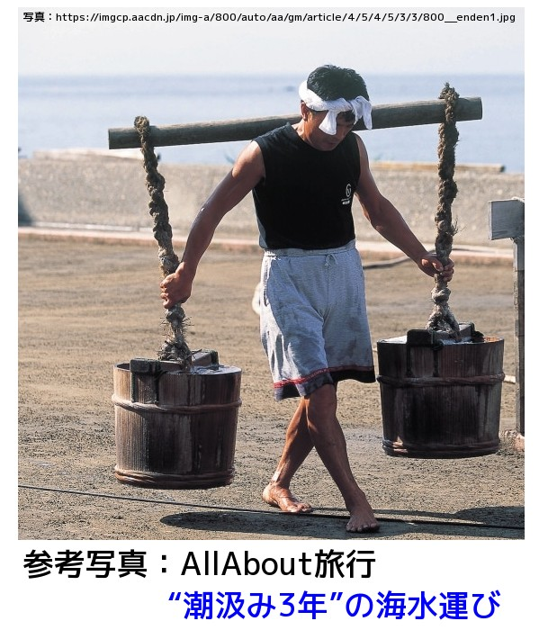

私の夫は昭和十七年秋、赤紙が来て召集され、翌年ガダルカへ連れ行かれ、最前線でお国の為命をかけて戦ったと聞きました。
私は六歳を頭に三人の幼子を抱え、疎開を拒んでいたのですが、出征兵士の留守宅の家族は強制疎開で拒みきれず、幼子を抱え静岡県の小さな海辺の町に疎開していました。
何も無い、何も無い、無い無いづくしの日々。 浜に出て製塩所で潮汲みをして働き、親子四人の生活をささえていました。
潮汲みは下着一枚で胃の辺りがかくれる位までの深さに歩いて、寄せては返す大波小波を物ともせず海水を汲むのが仕事です。

動作は実際にやった者でなければとても想像にあたいするものではありません。
テンビン棒の両端に細長い桶をたらし右肩にのせ、磯の方から一足二足と寄せては返す大波小波をけって、両方の手で両端についている桶を、波の折り返すその瞬間をねらって、ななめにして海水を汲むのです。
三月の節句の潮汲み人形なんて優しいものではありません。
その午前中の仕事が終わり三人の幼子の待つ部屋に帰ろうとした時、玉音放送はあったと思われます。
そぉ、その頃この小さな町で、ラヂオのあった家は二三軒ではなかったでしょうか・・・。
だから玉音放送をぢかに聞くどころか、その噂さえ時間がたってから耳にしたのです。
「それアメリカさんが襲ってくるそうな」放送よりその噂の方が右往左住し、どうなる事かと、三人の幼子を両手と胸にしっかりと抱きかかえ、ブルブル震えて永い一夜を明かしました。
明けて十六日は仕事どころか、アメリカさんをおそれて固く雨戸を閉ざし、息をこらえて家の中にひそんでいたと云う有様です。
そして二日たち三日たちましたが、恐れていたアメリカさんは襲って来ませんでした。
しかし敗戦の銃後の母は最前線の兵隊さんに勝るとも劣らぬ程の、言語に云い尽くされぬ苦労をしました。
「・・・・・」けど口に云い表せない、苦しい苦しい日々を送りましたが、あれから五捨年、こうして何云う事もなく元気で八拾四歳になり、その当時の幼子も立派に成長し、平和に幸せに生活していられるなんて、嘘みたい夢みたい。
之も皆命を捧げて戦ってくれた大勢の方々のお陰です。ありがたい事です。
銃後の母
「銃後の母」とは、戦時中に直接戦闘に参加せず、戦場の後方を支える一般国民、特に女性の役割を指す言葉です。 出征兵士を見送り、家族を支え、千人針を縫い、兵士の慰問や戦勝祈願を行うなどの献身的な女性像です。
日中戦争から太平洋戦争にかけて、労働力不足を補うため、食料生産や軍需品生産などの活動を担う存在としても期待されるようになりました。
また、戦時下のスローガン「産めよ殖やせよ」のもと、国の宝として子を産み育てる母親の役割も強調されました。
Google AI Gemini による概要